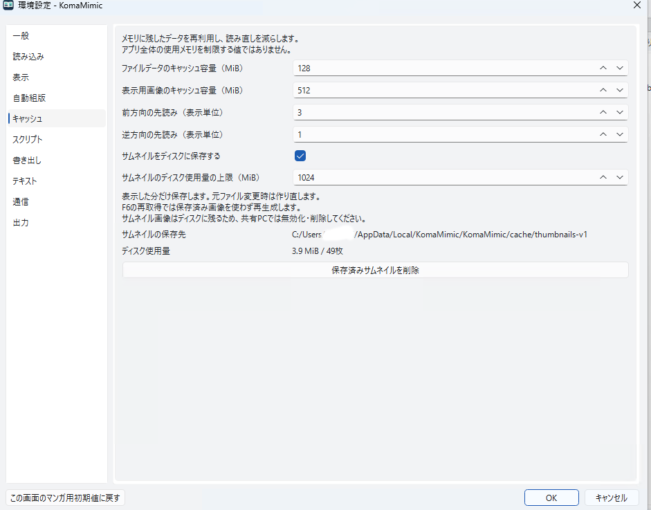

設定・読書データ・キャッシュ
日本語 | English
設定と読書データ
通常起動ではOS標準の設定場所に settings.ini を保存します。
同じフォルダの library.sqlite3 に本棚・履歴・読書状態などを保存します。
| OS | 通常の設定ファイル |
|---|---|
| Windows | %LOCALAPPDATA%\KomaMimic\KomaMimic\settings.ini |
| macOS | ~/Library/Preferences/KomaMimic/KomaMimic/settings.ini |
| Linux | ~/.config/KomaMimic/KomaMimic/settings.ini |
Linuxの XDG_CONFIG_HOME を指定している場合は ~/.config の部分が変わります。
コマンドラインの --config /path/to/settings.ini で別の設定を指定できます。
旧配置を使っていた場合は、起動時の移行によって場所が変わる場合があります。
バックアップはアプリを終了して設定フォルダごとコピーします。

自動再生の間隔
「環境設定 → 表示」の「自動再生の間隔（ミリ秒）」で指定します。1000ミリ秒が1秒です。 開始・逆再生・一時停止・停止は「ブックリスト → ページ・プレイリストの再生」で操作します。 MangaMeeyaの「プレイリスト再生設定…」ダイアログとは設定の入口が異なります。 互換性の説明と再生操作を参照してください。
全画面表示
「環境設定 → 表示 → 全画面表示」で切り替え、OKを押すと現在のウィンドウに反映します。 キャンセルした場合は変更しません。メニューやショートカット、OSの操作による切り替えも記憶します。 全画面で終了すると次回も全画面で起動し、通常表示に戻して終了すると次回は通常表示になります。 全画面を解除した際は通常ウィンドウの位置・サイズや最大化状態に戻ります。
新規設定や全画面状態を保存していない旧設定では、通常表示で起動します。
--fullscreen（-f）を指定した場合は保存状態にかかわらず全画面になります。
全画面状態は設定スロットとKomaMimic設定のエクスポート／インポートにも含まれます。
全画面状態の項目がない旧設定を取り込む場合は、現在の表示状態を保ちます。
キャッシュ
「環境設定 → キャッシュ」でメモリの先読みとサムネイルのディスク保存を設定します。 サムネイルのディスク保存は既定で有効、上限512 MiBです。設定画面から削除できます。 サムネイルは再生成できますが、設定や読書履歴の代わりにはなりません。
| OS | 通常のサムネイルキャッシュ |
|---|---|
| Windows | %LOCALAPPDATA%\KomaMimic\KomaMimic\cache\thumbnails-v2 |
| macOS | ~/Library/Caches/KomaMimic/KomaMimic/thumbnails-v2 |
| Linux | ~/.cache/KomaMimic/KomaMimic/thumbnails-v2 |
Linuxの XDG_CACHE_HOME を指定した場合は ~/.cache の部分が変わります。
これらはQtのOS別保存場所を使います。
別の --config を指定しても、OS標準のキャッシュ場所は独立しています。
メモリキャッシュの値はアプリ全体の使用メモリ上限ではありません。

サムネイル生成の同時実行数
「環境設定 → サムネイル → サムネイル生成の同時実行数」で1～4件を指定できます。既定は1件（並列なし）です。ディスク負荷を抑えたい場合は1件のまま使い、並列生成したい場合だけ増やしてください。 表紙・ページ一覧の表示対象の生成に適用します。キャッシュ読込、読書中の画像と先読み、明示的な一括処理の並列数は変更しません。 保存すると次に開始する生成から適用され、再起動後も保持します。設定変更だけで既存キャッシュを削除・再生成・再保存することはありません。
サムネイルの全件先読み
「環境設定 → サムネイル → サムネイルを全件先読みする」は既定でオフです。 オフでは表示範囲を読み込み、表示済み画像を一定量だけメモリに保持します。 オンでは現在の表紙一覧、または現在の本のページ一覧を対象に、表示範囲のキャッシュ読込・ 不足画像の生成が終わってから、残りも順に読み込みます。キャッシュがなければ生成します。 全フォルダを巡回する機能ではなく、文書本文のページサムネイルは対象外です。
スクロール時は先読みを中断して新しい表示範囲を優先し、操作が落ち着いたら残りを再開します。 読込済みの表示用画像を画面外でも保持し、戻ったときのファイル読込・画像復号を省きます。 フォルダ・本・表示モードの移動では残りの処理を取り消します。読書中は先読みしません。
「非表示サムネイルのメモリ上限（MiB）」は既定128 MiB、16～2048 MiBです。 現在の一覧の非表示画像と表示用アイコンを容量内で保持し、超えた分は古い画像から解放します。 表示中の画像、既存の別用途キャッシュ、Qtの管理領域を含むアプリ全体のメモリ上限ではありません。 容量内に収まらない一覧では、全件を同時にメモリ保持できません。 オフに戻すと通常の保持量へ戻ります。保存済みのディスクキャッシュは削除しません。 ディスク保存も有効なら、先読みした非表示分も保存され、次回以降に再利用します。
全ファイル一括ロード
「ツール → 全ファイル一括ロード」はオン／オフを保存する読込オプションです。 表紙・ページサムネイルの表示中でも選択できますが、実際の一括読込は読書中だけ行います。 現在ページの表示と設定した前後の先読みを優先し、その後にJPEG・PNG等のファイルデータを順に保持します。 サムネイルや全ページの画素画像を事前生成する操作ではありません。
モード・本・ページの移動では進行中の処理を取り消し、読書が落ち着いた後に必要な残りだけ再開します。
読込済みデータは同じ本の読書に再利用します。オフにすると一括読込用の保持データを解放します。
「環境設定 → キャッシュ → 一括ロードの上限（MiB）」は既定128 MiBです。
上限または最終ファイルで停止します。通常のファイルキャッシュ・表示用画像キャッシュとは別の容量です。
MangaMeeya設定の取り込みではConfig/BundleLoadを引き継ぎます。
読書開始時は、サムネイル一覧の項目作成や専用情報の準備を行いません。 それらはサムネイルモードへ切り替えた時点に準備し、読書へ戻ると不要な一覧処理を取り消します。
再利用と再生成
対応するメモリキャッシュがあればそれを使い、なければディスクキャッシュを使います。両方ない場合だけ、表示に必要な元画像を読み込んで生成します。保存済みキャッシュはそのまま有効として使います。表示のたびに元ファイルを確認せず、定期検証もしません。再表示・スクロール・フォルダへの再訪・再起動だけを理由に、元画像やZIPを読み直しません。
| 状況 | 優先する動作 |
|---|---|
| 現在表示する表紙・ページのキャッシュがある | 元データの検査より先に保存画像を表示 |
| 現在表示する画像のキャッシュがない | 必要なサムネイルを生成して表示し、保存は後で実行 |
| 所属フォルダの変更通知がある | 一覧情報を更新し、対象画像／ZIPの日時がキャッシュより新しい場合だけ再生成 |
| フォルダ・Book・表示モードを切り替えた | 旧対象の未完了要求を取り消し、移動先を優先 |
| 読書中 | 現在表示、次に先読み、最後に移行前の完成画像の保存 |
現在表示する対象のPNG読込は重い生成処理と分離し、保存・整理のロックやキャッシュ全件の走査を待たずに進めます。ページサムネイル表示中は非表示の読書画像の生成・先読みを行わず、読書中はサムネイル生成・更新検査・隠れた一覧の走査を行いません。
変更の確認
所属フォルダの変更通知でディレクトリ情報を更新し、そこにある対象画像ファイル／ZIPファイルの更新日時がキャッシュ作成日時（PNGの保存完了日時）より新しい場合だけ再生成します。フォルダ自身の更新日時は使いません。画像やZIPの中身を変更確認のために読むこともしません。この方法で把握できない変更や不正な表示は、F6で手動再作成してください。
フォルダ表紙の探索範囲
「環境設定 → サムネイル」の「フォルダ表紙の追加探索階層数」は0～8、既定0です。Aフォルダを開き、その中のBフォルダの表紙を表示する場合：
| 設定 | 探索範囲 |
|---|---|
| 0 | B直下の画像・ZIP等を探す。B/Cには進まない |
| 1 | B直下に加え、C直下まで探す |
| 2以上 | 指定した追加階層まで探し、そこで打ち切る |
候補はファイル優先の自然順で決めます。画面上の並び替えだけでは採用規則を変えません。設定範囲で対象がなければフォルダアイコンを表示し、同じ表示中に条件が変わらなければ探索を繰り返しません。探索を浅くしたり深度で打ち切ったりしても、保存済みの表紙を削除しません。
保存・保持・容量超過
生成結果は保存完了を待たず表示します。完成済みの未保存画像はフォルダやモードの切替でも保持し、現在表示・読書先読みより低い優先度で保存します。保存のために元ファイルを再検査しません。新しいPNGの保存が成功するまで既存PNGを保持し、生成・保存の一時的な失敗で旧画像を先に消しません。
表示対象のサムネイルは設定した同時実行数（既定1件、1～4件）で生成します。生成済み画像は保存前からメモリで表示でき、各workerが通常のキャッシュ先へ直接保存します。新PNGが確定するまで旧PNGを保持します。
未変更の画像は、未使用期間・経過日数・件数・スクロール・再起動・表示寸法の変更だけでは破棄しません。容量を超えた場合、または設定で上限を下げた場合だけ、画像の保存日時が古い順（FIFO）に容量内へ整理します。最終利用日時は使わず、キャッシュを読み出してもPNGの保存日時を変更しません。画像の更新が必要な場合は、新画像の保存成功後に旧画像を置き換え、新しい保存日時にします。
明示的なキャッシュ削除・F6による更新と容量整理は例外です。通常読込でキャッシュ自体を読めなかった場合だけ、別の保存画像や元画像からの生成へ進みます。
互換性とテキスト表紙
v1.5.0でも保存先・形式はthumbnails-v2を維持します。更新のために既存v2キャッシュを削除したり、全件再生成したりする必要はありません。完成したTXT・Markdownやテキスト入り書庫の表紙プレビューも保存対象です。本文は文書表示で読み、画像のページサムネイルとは区別します。
取得済みの画像は共通の32 MiBのメモリキャッシュでも再利用します。容量内に残っていれば、 フォルダや表示モードを往復しても保存PNGの読込・復号を省きます。 メモリから解放された分や再起動後の画像は、保存PNGから読み込みます。 これはサムネイル全件先読みの保持容量とは別のキャッシュです。
thumbnails-v1の読込・移行・自動削除は行いません。古いv1の領域を回収する場合は、その形式を使う旧版の「環境設定 → キャッシュ」で削除してください。現在のキャッシュ削除は通常v2のみが対象です。削除しても元画像・書庫・本棚・読書履歴は消えません。
異常終了時の未完成一時ファイルは完成済みPNGとして読みません。残ったロックはQtによる所有プロセス等の判定で回収します。
サムネイルが正しく表示されない場合（回避策）
- 表紙・ページサムネイル一覧を表示し、
F6（「サムネイルを再取得」）で元ファイルから再生成してください。古い表紙、取り違え、表示されない画像などは、まずこの操作で確認します。 - 改善しない場合は「環境設定 → キャッシュ」から現在のサムネイルキャッシュを削除し、対象のフォルダや書庫を開き直して再生成してください。
- それでも改善しなければ、元画像・ZIP等が読み込めること、ディスクの空き容量、ファイルアクセス権限を確認してください。元ファイルの破損はキャッシュ再生成では修復できません。
キャッシュ削除で元画像・書庫・本棚・読書履歴は消えません。再生成には元ファイルの読み込み時間が必要です。
配色と言語
環境設定の一般でシステム追従・ライト・ダークと、日本語・English・システム設定を選べます。 UI言語は保存後の再起動で反映します。配色モードは本文や画像の設定色を置き換えません。
詳細はMangaMeeyaとの違いを参照してください。